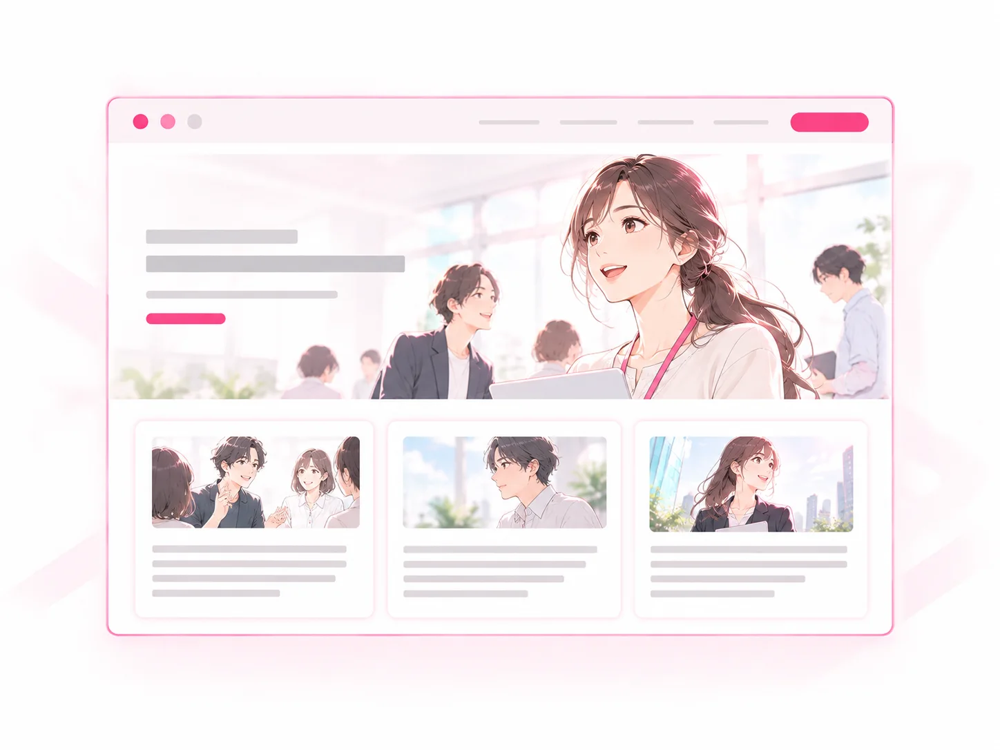
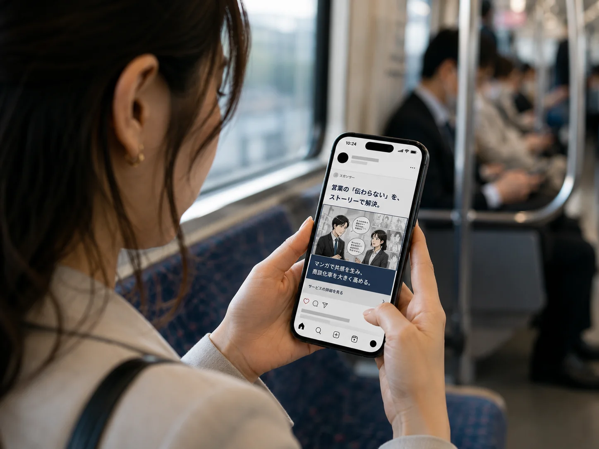

求人広告改善
見つけてもらい、惹きつける。
課題
表示は出ているのに、クリックや応募が少ない
行うこと
- タイトル・画像・原稿の見直し
- ターゲット・訴求の再設計
- 配信設定・掲載プランの最適化
向く状態
- 認知はあるが反応が弱い
- クリック率や応募率が低い
- 競合と比較して埋もれている
求人票
写真枠・動画枠にコンテンツを置き、目を止める
遷移先
社員インタビューや1日の流れで具体化する
応募
仕事内容が伝わった状態で応募が来る
SERVICE
つくるのは1回。届ける先は、5つ。
会社のリアルを一度うかがい、漫画・アニメ・記事・掲載ページに組み直します。求人広告から応募前、選考中、面接前、そしてAI検索まで使い分けます。
01 つくる
取材は1回。そこで聞いた話を、伝わり方の違う4つのコンテンツに組み直します。
元が同じなので、どこから見ても同じ会社の姿になります。
会社取材
代表や社員の方に、テーマごとにお話をうかがいます。
ストーリーでわかりやすく伝える
映像で魅力を印象的に伝える
情報を深掘りし、信頼性を高める

採用サイトで魅力を網羅的に発信
メッセージの軸をブラさずにまとめて制作するので、現場の手間も制作の手数も1回分で済みます。
何を看板にするかで、届く相手が変わります。自社の課題に直結するテーマを選びます。
経営者のメッセージで共感を醸成し、信頼感を高めます。
日常の仕事や職場の雰囲気を伝え、入社後のイメージを具体化します。
仕事内容ややりがいを深掘りし、ターゲット人材の興味を引きます。
成長ステップやキャリア事例を示し、将来の可能性を感じてもらいます。
02 届ける
制作の手数は1回でも、届け先は5か所あります。候補者が会社を思い出すたびに、同じ素材が別の顔で出てきます。

写真枠・動画枠に置き、通りすがりの目を止める。
スカウトや案内に添えて、「何の会社か」を先に伝える。
選考の合間に読んでもらい、理解を深めてもらう。
当日の不安を減らし、面接前の離脱を防ぐ。
検索や生成AIから読み取れる形で置いておく。
応募のあと連絡が途切れると、気持ちは冷めます。届けるものを決めておきます。
感謝と今後の流れを伝え、期待感を高めます。
会社・事業・働き方などのコンテンツで理解を深めます。
当日のご案内や準備事項をお届けし、安心感を提供します。
03 3つの改善ルート
つくったコンテンツを土台に、課題に合ったルートを選びます。
ここでは、それぞれで実際に何をするのかを書いています。
見つけてもらい、惹きつける。
課題
表示は出ているのに、クリックや応募が少ない
行うこと
向く状態
求人票
写真枠・動画枠にコンテンツを置き、目を止める
遷移先
社員インタビューや1日の流れで具体化する
応募
仕事内容が伝わった状態で応募が来る
費用を見直し、応募の質を整える。
課題
応募は来るが、コストが高く効率が悪い
行うこと
向く状態
掲載課金
出しただけで費用が発生する。応募がゼロの月も掲載料がかかる
応募課金
応募が入った分だけの請求。無駄な掲載費が出ず、費用が読みやすい
SNS運用、Meta広告の運用、Indeedなどの求人広告の運用代行にも対応します。
検索・AIで見つかる情報設計へ。
課題
検索しても求人が見つからず、そもそも候補に入らない
行うこと
向く状態
調べられる
検索や生成AIで「何をしている会社か」を確かめられる
情報を整える
採用コラム・よくある質問・掲載ページで読み取れる形にする
正しく伝わる
口コミではなく、会社が出した情報で説明される
※検索順位や、生成AIに推薦されることを保証するものではありません。
どのルートでも、出して終わりにはしません。小さな修正を積み重ねて反応を変えていきます。
制作と採用担当が連携し、狙いに沿った運用を実現します。
分析から改善、検証までを繰り返し、精度を高め続けます。
原稿・画像・導線の微調整を重ね、成果を最大化します。
04 進め方
つくって納品して終わり、にはしません。
掲載してからの効果測定と改善提案までを、ひと続きで回します。
課題や目的をうかがい、採用ターゲットと訴求軸を設計します。
原稿・デザイン・動画など、多様なコンテンツを制作します。
最適な媒体・チャネルに掲載し、ターゲットに届けます。
データに基づき効果を測定・分析し、改善提案を行います。
効果測定の結果は次の採用設計に戻し、改善を回し続けます。
いま動いている採用活動はそのままに、役割を分けて並行で進めます。
既存の取り組みを止めずに、新しい施策を並行して推進します。
要件定義・意思決定・情報提供は御社、施策設計・実行・改善提案は私たちが担います。
既存の業務フローに配慮し、現場の負担を最小限に設計します。